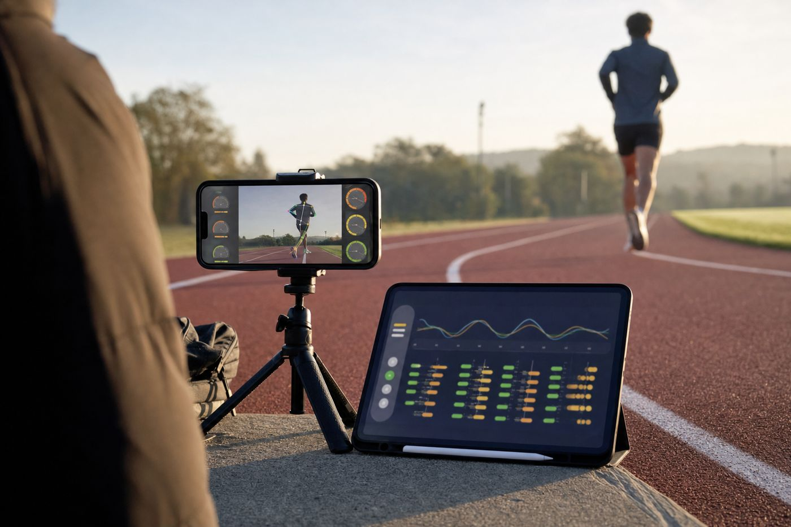
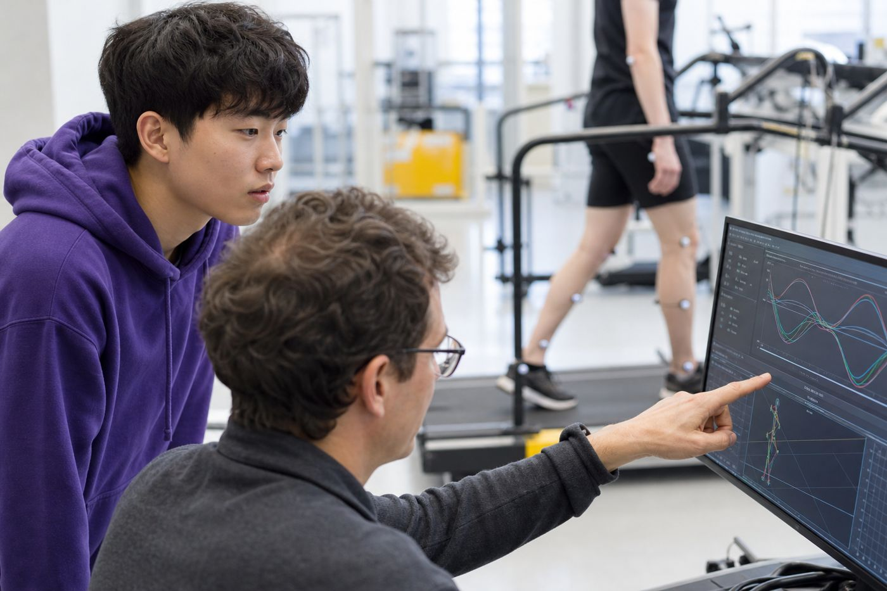
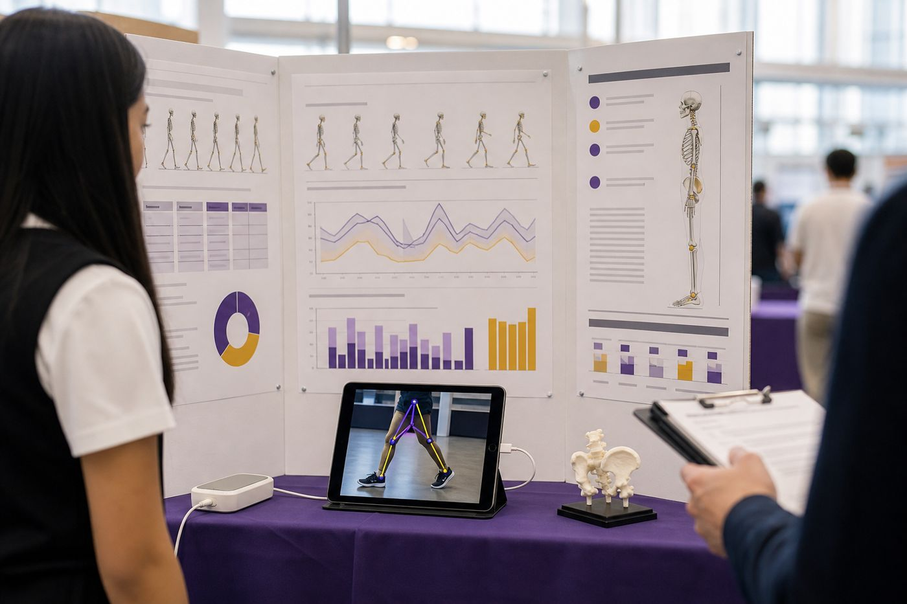

大多数跑步损伤不是因为跑得多，而是因为跑得不对。一部手机就能看到的姿态问题，不该等到受伤才被发现。
Eddie 聚焦跑步姿态与运动康复问题，开发了一款姿态分析与康复平台，通过手机摄像头捕捉身体关键点，分析膝关节角度、落脚模式、步频与躯干稳定度等指标，并结合语音与图像提示提供个性化矫正建议，降低运动损伤与二次伤害风险。
都从同一个项目里长出来，也都写进了申请。
深入 Human Movement Modeling 方向科研，实践运动学、人体生物力学与临床康复参数
发表论文《AI-Driven Posture Correction Framework for Lower-Limb Rehabilitation Using Real-Time Gait Estimation》，并参与国际会议 IEEE
获 ISEF 二等奖
申请美国技术专利（专利号 63/***,274）
完成跑步姿态与康复平台：手机视频姿态估计、关节角度分析与康复建议
通过 Apple App Store 与 Google Play 官方审核正式上架，并进入康复诊所试用
创立公益品牌与非营利组织 GaitHealth Initiative
应用于多个康复诊所、物理治疗中心及跑步俱乐部，累计覆盖 450+ 名用户；获总统义工奖（PVSA）
获得科研导师及康复中心负责人的高度推荐信与评价

